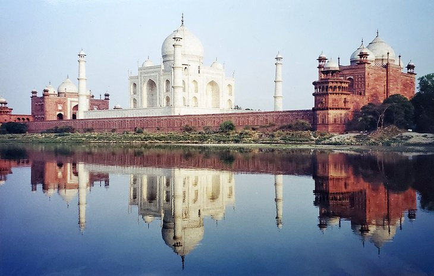

- The Acropolis, Athens, Greece
- Vatican Museums, Rome, Italy
- Basilica of the Sagrada Familia, Barcelona, Spain
- Machu Picchu, Peru
- Stonehenge, England
- Eiffel Tower, Paris, France
- Palace of Versailles, Versailles, France
- The Taj Mahal, India
- Angkor Wat, Cambodia
- Borobudur, Indonesia
- Sydney Opera House
- Forbidden City, China
Perched above present day Athens, the Acropolis draws you up and in. Follow in the footsteps of ancients as you walk up the same steps that have been walked on since 438 BC - 2,500 years. Views out over the city are incredible as you walk between the meticulously restored ancient buildings. Near the end of the day, you'll want to linger and watch the sunset from the stairs near the entrance. This is a nightly ritual in Athens. The site is also impressive looking up at it from the city below. Spend an evening dining on a rooftop patio to soak in the view of the hilltop ruins lit up at night.
Visit the home of the Pope and the vast complex of museums that chronicle the history and accomplishments of mankind over the last 2000 years. Escape the crowds and experience the Sistine Chapel in quiet solitude on the Waking Up the Vatican small-group tour. Or if it’s the Pope you want to see, guarantee your entry to the weekly Papal audience and enjoy a close-up encounter with one of the world’s most prominent religious figures
This unfinished Roman Catholic basilica is perhaps Gaudi’s best work. Construction on this basilica started in 1882 and while it’s still yet to be completed, this is one spot no traveler to Barcelona will miss. Its popularity among travelers means there’s always long queues, so plan ahead and book a priority ticket or one with optional tower entry to breeze your way to the front.
If you are planning to see only one attraction in South America, this is the place to come. The ancient Inca city of Machu Picchu is arguably the most impressive ruined city in the world. Much of the attraction comes from its location, high in the jungle-clad mountains of Peru. Set on a high plateau with soaring green mountains, the setting is surreal. The sheer tenacity of the original builders to create this amazing place in what would have been impenetrable jungle, is, in itself, impressive. Visitor numbers are now limited to a maximum per day, so the experience has been greatly enhanced.
Stonehenge is one of those places that makes you ponder what went on here over 4,500 years ago. It's long been a mystery to historians, and has captured the imagination of countless visitors. Despite the large number of tourists that descend on Stonehenge, the place still has a mystical feel. At the site, giant stones, some standing, some fallen, are set in two roughly circular patterns that are oriented to highlight the summer and winter solstices. For a truly memorable experience, plan your visit during one of these times.
The symbol of Paris and one of the most photographed structures in the world, a visit to the Eiffel Tower is a must for all travelers. Few landmarks inspire such a passion for travel as this single iron structure. Young travelers heading out on the road for the first time, couples looking for a special getaway, artists looking to spur their creativity, and romantics of all types are all drawn to Paris. This is a city where history and culture collide and where travelers of all kinds can find the experience they're after.
The French monarchy’s principal residence up until the French Revolution, the Palace of Versailles is truly a sight to behold. From the stunning Hall of Mirrors to the palace’s perfectly manicured gardens, there’s no shortage of things to explore.
The Taj Mahal is the one sight in India that all travelers need to see. The country is filled with incredible cities and fabulous places to visit, but the 17th-century Taj Mahal is the one place that says you've been to India. This mausoleum, commissioned by the Shah Jahan for his wife, Mumtaz Mahal, is known internationally as a symbol of love. This fantastic structure, made with inlaid precious and semi-precious stones, has to be visited to be fully appreciated. Its riverfront setting, surrounding gardens, and reflecting pools are also what make the Taj Mahal so special.
Surrounded by jungle and, in some cases, overgrown with huge trees and roots, the ancient structures of the Angkor complex may look like a movie set to some visitors. Wandering through Angkor Wat, the main centerpiece of the complex, it's easy to feel like you've entered another era. This is without a doubt, one of the most impressive sites in Southeast Asia and the main reason many people visit Cambodia. The stone faces peering out over the buildings and gates are images that you won't soon forget.
Set in a steamy jungle with three volcanoes providing the backdrop, Borobudur is Indonesia's top tourist attraction. Borobudur dates from the 9th century and is one of the largest Buddhist temples in the world. It's a fascinating place to wander about. Over 500 Buddhas are spread around the site, some of which sit under ornate stupas. Try to visit early in the morning when you'll have the best chance of experiencing a bit of early mist, and the view to the volcanoes will be the clearest
Like many other attractions around the world, the Sydney Opera House is one of those places that is easy to identify and obviously associated with Australia. A photo of yourself in front of the white sails screams Australia. The Sydney Opera House was built in several stages and officially opened in late 1973. To fully experience the building, take a tour inside to see the unique shape and hear the exceptional acoustics. Soak up the view from the Opera House area back towards the world-famous Sydney Harbour Bridge.
Like the Great Wall, the Forbidden City in Beijing is one of the top places to visit in China. The sprawling complex dates from the 14th and 15th centuries and is a spectacular example of historical China. Over the centuries, the palace has housed 24 Ming and Qing Emperors. Inside the city, the Palace Museum holds over 340,000 artifacts showcasing the treasures of China's dynasties. In front of the Forbidden City is Tiananmen square.


